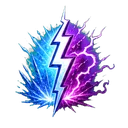
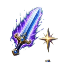
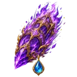

The rules of the duel
The Duelist’s Grimoire
Kept by the Academy for every apprentice who takes up the duel: the rules exactly as the duel enforces them, and nothing more. These are the same pages the game’s own Grimoire shows, with the standard rules of a duel.
Quick reference
Elements & weather
The six schools
Guard & charge
HP & MP
Resolving a clash
Status families
The convergence
The arcane veto
Arcana codex
Each Arcane Veto deals Arcana from these 45. A card nobody rejects changes the duel until the next ritual replaces it.
No Arcana
If this card survives the veto ritual, every other surviving Arcana is nullified for the cycle.
Overflowing Leylines
Charge gains 1 more MP.
Varied Casting
Classic: a non-Charge action used last round cannot be repeated immediately. Tactical: the same non-Charge action cannot occupy consecutive queue slots.

Wild Magic
Every offensive spell has an equal chance to miss or double its base PWR. Only base PWR is doubled; later PWR modifiers, bonus damage and status magnitudes are not doubled.
Sealed School
One randomly selected spell school is sealed for both duelists. Guard, Charge and Convergence are not eligible to be sealed.
Extreme Weather
A spell the sky favours gains +2 PWR instead of +1.
Cracked Guard
Guard reduces damage by 1 less than usual, to a minimum of 0.
Mana Reprisal
A Guard that reduces an offensive spell's damage gives its caster 1 MP.
Vampiric Spells
Direct spell damage dealt by offensive spells restores an equal amount of HP to the caster. Burn, Seeded and retaliation damage do not heal.

Arcane Might
All offensive spells gain +1 PWR.
Mana Burn
On activation, each duelist loses 1 HP per MP currently held.
Equalization
On activation, both duelists are set to 1 MP.
Mana Gift
On activation, both duelists gain 1 MP, capped by normal maximum MP.
Last Stand
Offensive spells gain +1 PWR for each full 25% of Max HP missing, up to +3 PWR. The tiers begin at 25%, 50% and 75% missing HP.
Second Wind
On activation, both duelists restore 2 HP, capped at Max HP.
Elemental Variety
Tactical onlyFire, Water and Grass may each appear only once in a confirmed queue.
Exploit Weakness
When a Fire/Water/Grass spell with an elemental advantage wins the clash, deal +1 bonus damage after PWR resolution.
Mana Echo
Tactical: the first non-Charge action in each queue costs 1 less MP, minimum 0; a free Guard uses the discount. Classic: the first non-Charge action costs 1 less MP, and a free Guard uses it too; after it is used, the discount becomes available again 3 rounds later.
Overcharge
Spending all currently held MP on a spell grants that spell +2 PWR.
Glass Cannon
Offensive spells gain +2 PWR, but casting one costs the caster 1 HP.
Reversal
Reverses the elemental triangle: Fire beats Water, Water beats Grass, and Grass beats Fire.
Unstable Weather
Weather changes to a different state after every clash, including between Tactical queue slots.
Arcane Tax
Repeating a non-Charge action used in the previous round costs +1 MP. Charge is exempt.
Final Spark
At 40% Max HP or lower, Charge gains 1 more MP.
Null Zone
Weather PWR bonuses and the Fire, Water and Grass elemental advantage PWR bonuses are disabled. Null Zone completely overrides Extreme Weather while both are active.
Mirror Magic
When both duelists cast the same offensive spell, the spells pass through each other instead of clashing. Each spell deals its resolved PWR directly to the opposing duelist and its normal on-damage effects may apply. Convergence counts as matching Convergence even when affinities differ.
Blood Casting
Missing MP may be paid with HP at 1 HP per missing MP. This payment can defeat the caster. It does not bypass Convergence priming or other action eligibility requirements. Spending all currently held MP still satisfies Overcharge even when remaining cost is paid with HP.
Spell Momentum
Each consecutive clash win adds +1 bonus damage to that duelist's later successful offensive hits. Momentum changes damage, not PWR, and resets only when that duelist takes damage.
Chaotic Queue
Tactical onlyRandomly reorder each confirmed three-action queue before resolution.
Elemental Surge
Fire, Water and Grass statuses are doubled: Burn 2 becomes 4, Weaken 2 becomes 4 and Seeded 1 becomes 2, for each sigil of a Convergence too.
Arcane Riposte
If Guard reduces the incoming offensive spell's direct damage to 0 and the defender survives, deal 1 retaliation damage to the attacker. A partial reduction does not trigger retaliation.
Cantrip Economy
Fire, Water and Grass cost 0 MP, but each loses 1 PWR, to a minimum of 0.

Grand Sorcery
Light, Void and Earth cost 1 additional MP and gain +2 PWR. Under the baseline they become 3 MP / 6 PWR.
Suppression Field
All offensive spells lose 1 PWR, to a minimum of 0.
Mana Spring
At the end of every third clash of the duel, both duelists gain 1 MP, capped by normal maximum MP.
Doom Clock
At the end of every third clash of the duel, both duelists lose 1 HP.
Forbidden Convergence
Convergence gains +1 PWR, costs 1 HP to cast in addition to its normal MP cost, and restores 1 MP to its caster after resolving.
Wardbreaker
When Convergence deals positive damage, destroy any existing Ward before its sigil effects are applied, then apply Arcane Lock. Arcane Lock cannot be cleansed and, until the end of the target's next clash, prevents that target from cleansing harmful statuses or gaining Ward.
Prismatic Ascension
If the three schools used to prime the current Convergence are exactly Fire, Water and Grass in any order, that Convergence gains +3 PWR. Baseline Convergence therefore becomes 7 PWR.
Lingering Cataclysm
After casting Convergence, the caster's next Charge gains 1 more MP, then this one-use benefit is consumed.
Restoration
On activation, each duelist restores 25% of their missing HP, rounded down.
Mana Mend
On activation, each duelist restores 1 HP for each of their six mana orbs that is empty, up to their Max HP.
Shared Vitality
On activation, both duelists' HP becomes the average of their HP, rounded up and capped at each duelist's Max HP.
Sanctuary
A Guard restores HP equal to the spell damage it prevented, if the defender survives. Earth ignores Guard, so it prevents nothing.
Life Spring
At the end of every third clash of the duel, both surviving duelists restore 2 HP, capped at Max HP.
No Arcana by that name.
Reading your rival
TELLS & TAUNTS
Before some rounds, never the first, an AI rival speaks. A tell names the kind of its first spell: an attack, a Guard or a Charge. A tell is always true: the rival locked in its spells before you chose, so that round it cannot glimpse yours. Anything else is a taunt, and tells you nothing.
WHO GIVES THEMSELVES AWAY
The more cunning the rival's style, the fewer of its lines are tells: Initiate and Chaotic 50%, Defensive 43%, Aggressive 36%, Tactician 29%, Savant 21%, Seer 14%, Mindreader 7%. The Oracle never gives one.
SIGNS OF THE DUEL
Both faces fill the screen before a decisive clash: a finishing blow, or a hit that takes a duelist to a quarter of their HP or below. At a quarter or below, that duelist's heartbeat sounds from their side of the screen, and their edge of it darkens.
Heroes & rival orders
Each hero carries one class passive, and a duel may switch passives off.
Every passive rests 3 clashes after it triggers.
WIZARD, LICH & FOOTMAN
Elemental Mastery
Beat the rival's school: your spell gains +1 PWR.
Fire beats Grass, Grass beats Water, Water beats Fire. When your Fire, Water or Grass beats the rival's spell, it gains +1 PWR on top of the usual advantage.
Cooldown: 3 clashes after it triggers.
Soul Siphon
Deal spell damage: restore 1 HP.
Any of your spells that deals damage restores 1 HP.
Cooldown: 3 clashes after it triggers.
Stalwart Guard
Guard against an attack: gain 1 MP.
When your Guard meets a rival's attack, you gain 1 MP.
Cooldown: 3 clashes after it triggers.
THE DEVIL ORDERS
Hellfire
Deal damage with Fire: your next spell gains +1 PWR.
When a Fire spell of yours deals damage, +1 PWR is banked for your next offensive spell, landed or not. Guard and Charge keep it banked.
Cooldown: 3 clashes after it triggers.
Thornfury
Deal damage with Grass: your next spell gains +1 PWR.
When a Grass spell of yours deals damage, +1 PWR is banked for your next offensive spell, landed or not. Guard and Charge keep it banked.
Cooldown: 3 clashes after it triggers.
Riptide
Deal damage with Water: your next spell gains +1 PWR.
When a Water spell of yours deals damage, +1 PWR is banked for your next offensive spell, landed or not. Guard and Charge keep it banked.
Cooldown: 3 clashes after it triggers.
THE GUARD ORDERS
Hold the Line
Guard but still take spell damage: take 1 less.
When you Guard and a spell still gets through, you take 1 less damage from it.
Cooldown: 3 clashes after it triggers.
Counterguard
Guard but still take spell damage: your next spell gains +1 PWR.
When you Guard and a spell still gets through, +1 PWR is banked for your next offensive spell, landed or not. Guard and Charge keep it banked.
Cooldown: 3 clashes after it triggers.
Aegis Reserve
Guard against an attack: gain Ward.
When your Guard meets a rival's attack, you gain Ward against the next status. It does not trigger while you already hold Ward.
Cooldown: 3 clashes after it triggers.
THE GHOUL ORDERS
Grave Chill
Take spell damage: next hit restores 1 MP.
When a rival's spell damages you, 1 MP is banked for your next offensive spell. If that spell deals damage, you restore it; if it deals none, it is lost. Guard and Charge keep it banked.
Cooldown: 3 clashes after it triggers.
Carrion Bloom
Take spell damage: next hit restores 1 HP.
When a rival's spell damages you, 1 HP is banked for your next offensive spell. If that spell deals damage, you restore it; if it deals none, it is lost. Guard and Charge keep it banked.
Cooldown: 3 clashes after it triggers.
Grave Hunger
Take spell damage: next hit restores 1 HP and 1 MP.
When a rival's spell damages you, 1 HP and 1 MP are banked for your next offensive spell. If that spell deals damage, you restore both; if it deals none, both are lost. Guard and Charge keep them banked.
Cooldown: 3 clashes after it triggers.
The Vale & the Three
THE CONVERGENCE VALE
Three weather currents meet over a village road, and where they cross the Academy holds its duels. Sun, Rain and the Full Moon take the sky in turn; each favours one school, and none can change the cycle beneath them.
THE THREE
Fire, Water and Grass are the young schools, each master of one and servant of another. Every apprentice learns them first, and learns that no school wins alone.
THE ELDER SCHOOLS
Light mends and wards, Void starves, Earth stands. They take no side in the cycle, and the Academy teaches them only to duelists who have walked the Journey far enough to be trusted with them.
THE CONVERGENCE
When the schools a duelist has cast gather into one, they answer as a single spell. The emblem of the Vale is that moment: three currents turning into one light.
Mastery & titles
SCHOOL MASTERY
Every spell you cast in a finished duel counts toward its school; a fizzle does not, nor a friend duel. 66 casts master a school and earn its title: Flamecaller, Tidecaller, Thorncaller, Dawncaller, Voidcaller and Stonecaller. Fire, Water and Grass together make a Triune Elementalist; all six, a Hexarch.
RANK
Your victories name you: Apprentice, Adept at 5, Magus at 12, Archmage at 25, Grand Arcanist at 50, Archon at 66 and Arcane Sovereign at 100.
OVER YOUR NAME
The title you wear stands over your name, in the menu and in the duel, or your rank when you wear none. A rival shows its style; a friend, their own.
Titles, frames and regalia change how you look, never how you duel.
The lessons
The Journey teaches the duel one lesson at a time, against a rival who tests it. In the game, every lesson card and the Grimoire’s TUTORIAL VIDEOS pages have a short film of the lesson.
- 1The First SparkCharge, Fire and Burn
- 2The Creeping ThornGrass and Seeded
- 3The Turning TideWater and Weaken
- 4The Changing SkyWeather: Sun, Rain and Full Moon
- 5The Gift Of The BloodlineYour class passive
- 6The Cleansing LightLight and its cleanse
- 7The Hungry VoidVoid and Mana Drain
- 8Stone And BloodGuard, Earth and Stoneguard
- 9The ConvergenceSigils and Convergence
- 10Arcana AwakeningThe Arcane Veto
- 11Tactical DoctrineThe Tactical queue